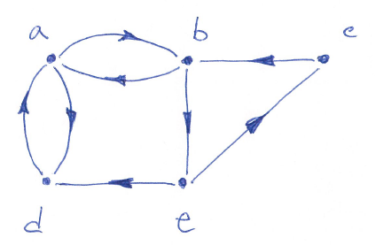
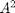
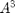

Question 58, Section 10.4
David Dobor
We want the length of the shortest path from a to c in the graph for question 2 on page 689. Here's that directed graph:

First, write down the adjacency matrix. (Here a is the first vertex, b second, and so on, in alphabetical order. Thus the (3, 2)-th entry in in the adjacency matrix signifies the presence of an edge from c, vertex 3, to b, vertex 2):
A = [0 1 0 1 0;
1 0 0 0 1;
0 1 0 0 0;
1 0 0 0 0;
0 0 1 1 0]
A =
0 1 0 1 0
1 0 0 0 1
0 1 0 0 0
1 0 0 0 0
0 0 1 1 0
What would the number of different paths of length 2 from a to c? That would be the entry (1, 3) in the adjacency matrix squared. So we compute  and look at its (1, 3) entry.
A_squared = A^2
A_squared =
2 0 0 0 1
0 1 1 2 0
1 0 0 0 1
0 1 0 1 0
1 1 0 0 0
We see that entry (1, 3) is zero, meaning that there is no path of any length from a to c.
Bonus question: How many paths of length 2 from b to d are there according to this matrix? Trace all these paths on the above graph.
How about paths of length 3? We need :
A_cubed = A^3
A_cubed =
0 2 1 3 0
3 1 0 0 1
0 1 1 2 0
2 0 0 0 1
1 1 0 1 1
The entry in is now 1, meaning there is one path from a to c. Since we had to take the 3-d power of A to get the first non-zero entry in the (1, 3)-d position, we conclude that the length of that path is 3, and that no shorter paths from a to c exist in this graph (since all the lower powers of had zeros as entries in that position).